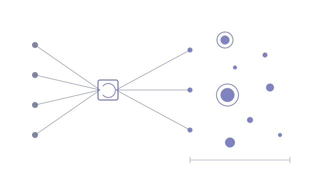

A sales team wants to know which large consumer businesses in a country run apps, how many people use them, and which are worth a conversation. The answer is scattered across app-store charts, public knowledge bases, the CRM and a target list, and the most important number (audience size) is rarely published anywhere clean. Researching it by hand takes weeks per country and goes stale immediately.
- The universe is assembled from public app-store charts and lookups, an open knowledge graph, large CRM accounts and an agreed target list, then de-duplicated so a parent brand never swallows a different business with a similar name
- An LLM with web search researches each business, and a figure is only kept if its source URL was one the model actually searched
- A resumable worker processes the run in chunks under a heartbeat lease, and every write is lease-checked so a stale chunk can never rewind status or progress
- Malformed answers retry in the same call and failed entries requeue, so a run finishes with near-zero gaps rather than a pile of manual follow-ups
- A seven-criterion fit score with agreed weights, computed at render time
Full country runs cover 600 to 900 businesses each for roughly $30, at about $0.15 per business. Results are filterable by category, audience band and fit tier, and a run that hits trouble can be reopened and resumed rather than restarted.
- Next.js on Vercel · chained worker routes
- Supabase · Postgres, row-level security
- Anthropic API with web search
- Public app-store and open-data APIs
The cheapest fix was choosing a different tool
The pilot came in over its per-business cost ceiling, and the obvious levers (a smaller model, fewer searches, a shorter prompt) each made the research worse. Measuring cost per call from stored usage showed the real culprit. The dynamic web-search tool was quietly re-reading the cached prompt around twenty times per business as it decided what to search next, and every re-read was billed.
Switching to the basic web-search tool, with a fixed small number of searches, nearly halved the cost per business without a measurable drop in what it found. It is a useful reminder that with agentic tools the bill is shaped by how the tool behaves, not just by which model sits behind it, and the only way to see that is to measure each call rather than trust the price list.
A worker that can't overwrite its own future
A country run takes far longer than any single serverless request is allowed to live, so the work is split into chunks that chain into one another. That design creates a quiet hazard: if a chunk stalls and a fresh one takes over, the stale chunk can wake up and write old progress over new. Automated code review found five variations of that overlap across three rounds.
The fix was to give each run a lease with an owner, renewed on a timer while a chunk is working, and to route every write through a check that the writer still holds it. A chunk that has lost its lease simply finds its writes refused. The same structure makes recovery boring: a run with a few failed entries can be reopened, and the worker picks up exactly where the record says it stopped.